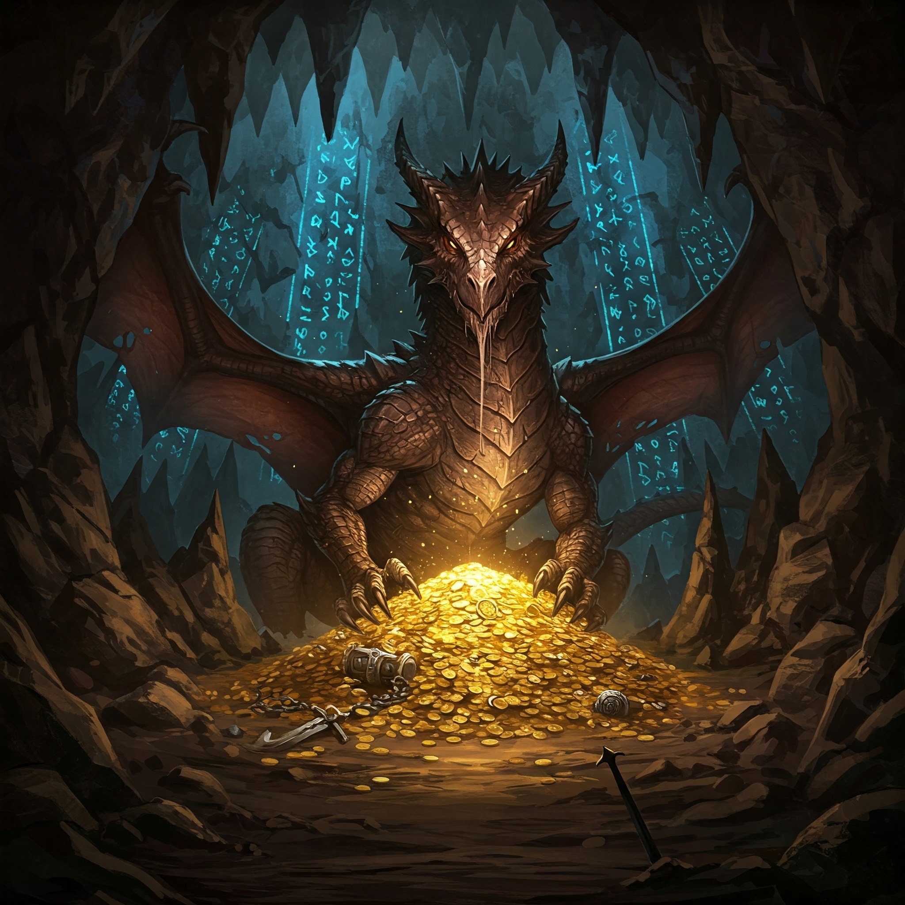

Capítulo 7: La Historia de Drakorg

El dragón se acomodó sobre las montañas de oro y sus ojos brillaron con la luz de milenios de recuerdos...
"Hace doscientos mil años," comenzó Drakorg, con una voz que sonaba como el rugido del mar en una cueva, "cuando la magia fluía libremente por el mundo, tres grandes reinos coexistían en perfecta armonía: el Reino de los Elfos, el Reino de los Magos y, en el centro de todas las tierras, el Reino de los Humanos y los Dragones, bañado en oro puro."
Spike escuchó fascinado cómo Drakorg le contaba la leyenda que su amo había leído en los libros antiguos: los festivales interreinos, el esplendor dorado del reino humano-dragón, la envidia del Archimago Magnor, que susurraba veneno en los oídos de elfos y magos hasta que estos olvidaron la amistad y solo vieron amenazas. Y la guerra: treinta días de cielo en llamas, elfos cayendo, magos consumiéndose en su propia oscuridad, y el reino dorado convirtiéndose en ruinas.
"En sus últimos momentos, Magnor pronunció su maldición eterna," continuó el dragón, y su voz se volvió tan grave que las paredes de la cueva temblaron. "'Que el oro que tanto aman sea su perdición. Que cada pieza corrompa el corazón de quien lo posea, que despierte la codicia más oscura, que destruya reinos y familias. Solo cuando llegue alguien que vea más allá del brillo del oro, que busque no poseer sino compartir, solo entonces esta maldición podrá romperse.'"
"¿Y por eso escondisteis el tesoro?" preguntó Spike, con la cola quieta y las orejas atentas.
"Los dragones supervivientes decidimos esconder el oro en las profundidades de la tierra para proteger al mundo de él," respondió Drakorg. "Yo fui el último elegido para quedarme de guardia. Durante doscientos mil años he visto a aventureros llegar con los ojos brillantes de codicia... y todos han caído bajo la maldición. Se han vuelto sombras de sí mismos, esclavos del oro, hasta que olvidaron quiénes eran."
Spike miró a su amo, que lo esperaba en la entrada de la cueva, y sintió un escalofrío. "Pero tú me dejaste pasar. Me hiciste acertijos en lugar de lanzarme fuego."
"Porque tú resolviste mis acertijos con sabiduría, no con ansia," dijo Drakorg, y por primera vez en milenios, sus ojos tuvieron un destello de esperanza. "Porque respondiste 'el corazón' cuando te pregunté qué era más valioso que el oro. Quizás... quizás tú eres el que la profecía esperaba. Pero no lo sabremos hasta que pases los tres juicios de la maldición."
"¿Tres juicios?" repitió Spike, enderezándose. "¿Y qué tengo que hacer?"
"Demostrar que tu corazón no puede ser corrompido," rugió Drakorg, abriendo sus alas enormes. "El primer juicio empieza ahora: la prueba del deseo."
Capítulo 8: El Primer Juicio — La Prueba del Deseo

Drakorg se apartó y, por primera vez, Spike y su amo quedaron a solas frente a las montañas de piedras doradas...
El oro brillaba con una luz que parecía viva, como si cada piedra respirara. Y entonces pasó algo extraño: el amo de Spike, que siempre había sido un hombre sensato y bondadoso, dio un paso hacia el tesoro con los ojos vidriosos.
"Amo," dijo Spike, tocándole la pierna con el hocico. "¿Qué haces?"
"Mira, Spike," susurró el hombre, sin dejar de mirar el oro. "Con esto podríamos comprar un barco nuevo. Podríamos dejar de arriesgar la vida en el mar. Podríamos... podríamos vivir tranquilos para siempre."
Spike sintió que algo andaba mal. El oro parecía murmurar, llamando al amo con una voz dulce y venenosa. El hombre se arrodilló y tomó una piedra dorada entre sus manos, y en ese instante sus ojos cambiaron: se volvieron oscuros y hambrientos, y su boca se torció en una sonrisa que Spike nunca le había visto.
"¡Amo!" ladró Spike, pero el hombre no lo oía. Estaba contando piedras, llenándose los bolsillos, murmurando cosas que no tenían sentido: "Mío, todo mío..."
Spike entendió que aquello era el juicio. La maldición estaba probando a su amo, y si nadie lo detenía, el hombre que lo había criado, que le había enseñado a navegar y a ser valiente, se convertiría en una sombra codiciosa para siempre.
Sin dudarlo un segundo, Spike saltó y, con un movimiento preciso, arrancó la piedra de las manos de su amo con los dientes y la escupió lejos. Luego se sentó frente a él, moviendo la cola, y ladró con todas sus fuerzas: "¡Recuerda, amo! ¡Recuerda quién eres!"
El hombre parpadeó, confundido, como si despertara de un sueño. Miró sus manos vacías, miró a Spike, y poco a poco sus ojos volvieron a ser los de siempre. "Spike... ¿qué me estaba pasando? Sentía que el oro me hablaba..." Se miró las palmas, asustado. "Creo que por un momento olvidé... olvidé todo lo que me importa."
De las sombras surgió la voz de Drakorg, profunda y aprobatoria: "El primer juicio está superado. No deseaste el oro para ti, Spike: salvaste a quien amas de la codicia. Pero la maldición es astuta, y sus pruebas más difíciles aún están por llegar."
Capítulo 9: El Segundo Juicio — Las Sombras del Pasado

Apenas Drakorg terminó de hablar, la cueva se llenó de niebla fría. Y de la niebla emergió un sonido que Spike conocía demasiado bien: el crujir de la madera vieja y el aullido del viento entre velas rotas...
Era el barco fantasma, el mismo que Spike y su amo habían encontrado al principio de su aventura, aquel que guardaba el mapa del tesoro. Pero ahora navegaba dentro de la cueva, entre las sombras, y en su cubierta se movían figuras pálidas y traslúcidas: la tripulación de espectros que había buscado el tesoro antes que ellos... y que había muerto buscándolo.
El capitán fantasma, con una barba de algas y ojos que eran dos agujeros de oscuridad, se detuvo frente a Spike y señaló el tesoro con un dedo huesudo. "Nosotros lo encontramos primero," silbó su voz, como viento entre dientes. "El oro es nuestro. Siempre fue nuestro. Entregádnoslo, o quedaréis aquí con nosotros... para siempre."
La tripulación fantasma avanzó, y Spike retrocedió hacia su amo. Pero en lugar de atacar, Spike observó. Observó las cadenas que colgaban de los brazos de los espectros, los mapas rotos que llevaban colgados del cuello, las monedas oxidadas que sujetaban contra el pecho como si fueran corazones.
"No queréis el oro," dijo Spike, sorprendiendo incluso a su amo. "Queréis volver a casa. Mirad vuestros mapas: todos apuntan al mar abierto, a ningún sitio. Vosotros también olvidasteis lo que amabais. El oro solo os enseñó a desear más oro."
El capitán fantasma tembló. Sus dedos huesudos se cerraron sobre una moneda y, por un instante, su rostro de oscuridad se suavizó. "Nosotros... teníamos familias," susurró. "Puertos donde nos esperaban. Pero la maldición nos hizo olvidar sus rostros. Solo nos dejó el recuerdo del brillo."
"Entonces recordadlos," dijo Spike, con la voz firme. "Recordad que el tesoro no os devolverá lo perdido. Ningún oro vale un abrazo que ya no podéis dar. Soltad las monedas y dejad que el mar os lleve a casa."
Las monedas cayeron al suelo con un tintineo que se convirtió en música. Una a una, las figuras fantasmales fueron volviéndose transparentes, más ligeras, más claras. Y antes de desvanecerse del todo, el capitán fantasma miró a Spike y le hizo una reverencia: "Has visto lo que nosotros no pudimos ver, pequeño perro. Ojalá el tercer juicio te sonría."
La niebla se disipó, y Drakorg emergió de las sombras con una mirada de asombro genuino. "Doscientos mil años de tripulaciones malditas, y en un solo instante has liberado a la única que aún podía salvarse. El segundo juicio está superado, Spike: no has usado la fuerza, has usado la compasión." Pero su voz se volvió grave. "Queda el último juicio, y es el más difícil de todos: la prueba del precio."
Capítulo 10: El Tercer Juicio — El Precio de la Libertad

Drakorg extendió una garra y de su escama brotó una imagen flotante: el puerto de donde Spike y su amo habían zarpado, el pequeño pueblo costero que llamaban hogar...
En la imagen, el pueblo aparecía asolado: tejados rotos, barcos volcados en la orilla, gente cargando bultos bajo la lluvia. "Mientras estabais aquí, una tormenta ha azotado vuestro puerto," dijo Drakorg con voz neutra. "He visto vuestros recuerdos: conocéis a esas personas. El panadero que os regalaba pan duro, la niña que jugaba con vosotros en la playa, el viejo capitán que os enseñó los vientos."
"¿Están...?" empezó el amo, con la voz rota.
"Están vivos, pero lo han perdido casi todo," continuó el dragón. "Y aquí está la prueba: la maldición solo puede romperse por completo si alguien que ha visto el tesoro con pureza de corazón renuncia a él para siempre, sin llevarse ni una sola piedra. Pero el oro también puede usarse: una sola de estas piedras bastaría para reconstruir vuestro pueblo. Yo os la daría a vosotros, sin engaños. Pero si la tomáis, la maldición vivirá en esa piedra, y dentro de un siglo, o de mil, volverá a corromper a otro corazón, a otra familia, a otro pueblo. La maldición nunca muere del todo si una sola piedra sigue en el mundo."
Spike y su amo se miraron. La decisión era terrible. Una piedra, y el pueblo reconstruido. Pero con ella, la semilla de la maldición viajaría al mundo, dispuesta a germinar en alguna otra parte.
El amo de Spike cerró los ojos. Respiraba hondo, y Spike, que conocía cada latido de su corazón, supo lo que estaba pensando: en la niña de la playa, en el panadero, en todos los que los esperaban. Y también supo lo que su amo iba a hacer antes de que abriera la boca.
"No tomaremos nada," dijo el amo, y su voz era firme, aunque le temblaban las manos. "Mi abuelo solía decir que hay deudas que se pagan con oro... y deudas que se pagan con el alma. Si para salvar a nuestro pueblo tenemos que condenar a otro dentro de mil años, entonces no los estamos salvando: los estamos traicionando. Prefiero volver a casa con las manos vacías y el corazón entero."
Spike se sentó junto a él, erguido y orgulloso. "Y yo prefiero ser un perro pobre con un amo así," ladró, "a ser el perro más rico del mundo con la conciencia manchada."
Drakorg guardó un silencio tan profundo que parecía que el tiempo se había detenido. Luego, muy despacio, el dragón se inclinó y de sus ojos rodaron dos lágrimas doradas que brillaron como estrellas al caer sobre el oro.
"Doscientos mil años," murmuró el dragón, con la voz quebrada de emoción. "Doscientos mil años esperando a alguien que entendiera que el oro no es riqueza, sino una prueba. Y hoy, un perro y su amo me han enseñado lo que los reyes de los tres reinos jamás comprendieron: que la verdadera libertad no se compra, se elige."
Y entonces sucedió. Las montañas de oro comenzaron a brillar con una luz blanca y purísima, y una a una, las piedras doradas se convirtieron en polvo de arena, como si la maldición se deshiciera en el aire con un suspiro de alivio. Cuando el brillo se apagó, en el centro de la caverna solo quedaba una pequeña brújula dorada, reluciente y humilde.
"La maldición se ha roto," dijo Drakorg, con las alas abiertas y el pecho temblando de libertad. "El oro se ha convertido en arena, porque nunca fue real: era la forma que la maldición le daba a la codicia. Y esta brújula... esta brújula es el único tesoro verdadero que siempre estuvo aquí. No apunta a un lugar del mapa, Spike. Apunta siempre a casa, al corazón de quien la lleva. Tómala, pues la habéis ganado."
Capítulo 11: El Regreso a Casa (Final)

Cuando Spike y su amo salieron de la cueva, el cielo les pareció más azul, el mar más brillante y el mundo entero más grande de lo que recordaban...
Detrás de ellos, Drakorg emergió de la isla con un rugido tan jubiloso que las gaviotas alzaron el vuelo en bandadas. El último de los grandes dragones, libre por primera vez en doscientos mil años, desplegó sus alas inmensas y se lanzó al cielo. Dio tres vueltas sobre la isla, dejando tras de sí una estela de luz dorada, y se alejó hacia el horizonte, donde el sol se ponía.
"¡Adiós, Spike!" rugió su voz, lejana y feliz. "¡Gracias por devolverme la vida! ¡Que tu brújula nunca deje de apuntar a casa!"
Spike y su amo navegaron de vuelta al pueblo con el corazón lleno. No llevaban oro, ni riquezas, ni piedras brillantes. Llevaban una brújula dorada y una historia que contar. Y cuando el barco llegó a puerto, el pueblo entero salió a recibirlos, con la tormenta aún en la memoria pero la alegría ya en los ojos.
"¡No traemos oro!" gritó el amo, riendo, mientras la gente lo abrazaba. "¡Pero traemos algo mejor: una historia y la promesa de que siempre volveremos!"
Esa noche, alrededor de una gran fogata en la playa, Spike y su amo contaron la leyenda de Drakorg, la maldición del oro y los tres juicios. Los niños escuchaban con los ojos como platos, y los mayores asentían en silencio, sabiendo que era más que un cuento: era una lección.
Y cuando alguien le preguntó a Spike qué había aprendido de su mayor aventura, el perro pirata se sentó, miró su brújula dorada (que, como siempre, apuntaba a su amo) y respondió con un ladrido que todos entendieron:
"Que el tesoro más grande del mundo no se encuentra bajo tierra. Se encuentra en las personas que te esperan cuando vuelves a casa. Y que ninguna riqueza vale la pena si para conseguirla tienes que olvidar quién eres."
Desde aquel día, Spike y su amo siguieron navegando los siete mares. No buscaban tesoros: buscaban aventuras, historias y amigos. Y en cada puerto, contaban la historia del último dragón y la maldición rota, para que nadie olvidara que el oro brilla, pero el corazón vale más.
✦ Fin ✦
Lo que Spike nos enseña
La verdadera riqueza no está en lo que poseemos, sino en lo que compartimos y en quienes nos esperan en casa. La lealtad, el amor y la valentía valen más que todo el oro del mundo.